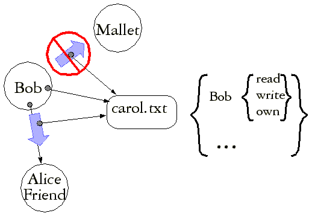

| |
Confinement |
||||||
(See Prohibiting Delegation for context)
Mallet and Bob are not supposed to be able to communicate. However, both Bob and Mallet wish Mallet to have the power. The Confinement Problem is to enable Alice to know that Bob and Mallet are indeed separated despite their joint efforts to communicate.
| Information (bits) |
Authority (capabilities) |
|
|---|---|---|
| Leakage Out | Wall Banging Limiting Bandwidth |
Authority Out |
| Leakage In | Durability Non-Determinism |
Authority In |
In the original paper on the confinement problem (and Covert Channel Analysis) is expressed purely in terms of the leakage of information, but as above, one may also reason about the leakage of authority. These two are usefully distinguished. The original paper likewise was concerned only about leakage out. In our framework, this is Alice's ability to constrain Bob from leaking information or authority out to his unconstrained collaborator, Mallet. It is useful to separately examine Alice's ability to constrain Bob from receiving information or authority from Mallet, ie, to prevent leakage in to Bob.
Our understanding of how to solve confinement derives from the KeyKOS Factory. The KeyKOS Factory, as well as the confinement mechanisms of E and EROS, only directly prevents leakage of capabilities, and thereby would seem to prevent the leakage of authority. What about information?
Overt vs Covert Channels
In a pure capability system, all overt causality flows only along capabilities. In a pure system, a capability is the only overt channel, and confinement of all overt channels prevents the flow of overt information. What is overt causality? It is causality specified by the underlying computational model. A correct program, by definition, may only depend on overt causality for its correctness. Contrast:
if (40 + 40 < 50) { doSomethingBuggy() }
with
if (foo.hashCode() < 50) { doSomethingBuggy() }
(Written under the assumption that Java's Object.hashCode() method is available in E. In fact it isn't for exactly the reason that it's a good example here.)
The first program is not buggy, because we know it will not call doSomethingBuggy(), since the sum of 40 + 40 is guaranteed by the specification to be greater than 50. One might like to say the second program is buggy, since it might call doSomethingBuggy(). But what if the author of the second program knows the enough about the implementation of the particular system this code will run on to know what hashCode will be assigned, and thereby knows that it's guaranteed, by the implementation to be less than 50? We still define the program to be incorrect, because it is relying on incidental properties of the implementation that are outside the specified properties.
Though we define the second program to be incorrect, the author, Mallet, still knows it will actually run correctly, so it may still suit his purposes. As long as it is possible for Mallet's programs to depend on incidental properties of a system, some of his programs may do so. Therefore, the security of Alice's programs may not depend on Mallet not exploiting incidental properties of a system. Can Alice do so, and have her security depend only on specified properties of the system? Only if the specification is tighter than is the normal computer science habit.
Javasoft's specification of Object.hashCode() is here. Unsurprisingly, it does not determine what particular integer will be returned under particular circumstances, though it does impose the set of reasonable constraints one would expect from other object systems. However, these constraints do not specify what information must not be revealed. A peculiar but conforming implementation could read successive locations of memory, and use their values as successive hashCodes. Under such an implementation, Alice could not protect her secrets from Mallet. For Alice's security to be correct, it must depend only on the specification of the system, and therefore the specification must be tight enough to prohibit, for example, such secret-revealing hashCode implementations.
A specification, like hashCode's, that leaves room for incidental implementation properties that computation can sense, is a non-deterministic specification. The causality of an implementation that computation can exploit, but that is outside of the specified causality of the system, is covert causality. To derive information from covert causality is to read a covert channel. To provide a covertly causal input that another can sense is to write a covert channel. Ideally the non-determinism allowed by the specification is constrained enough for Alice to be assured, by Factory-like mechanisms, that Bob and Mallet cannot covertly communicate. Unfortunately, such a strong specification can be very difficult or costly to implement, and neither KeyKOS, EROS, nor E attempt to do so.
*** to be fleshed out
See also "Distributed Capability Confinement".
Why ACLs Can't Confine:
The Shapiro Proof
*** to be fleshed out

Unless stated otherwise, all text on this page which is either unattributed or by Mark S. Miller is hereby placed in the public domain.
| |
|
report bug (including invalid html)
|
||||||||